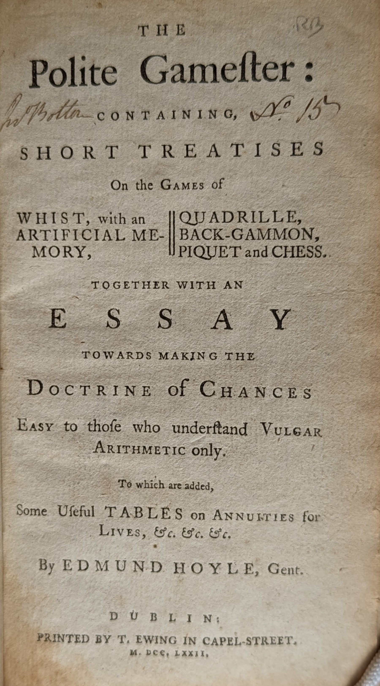
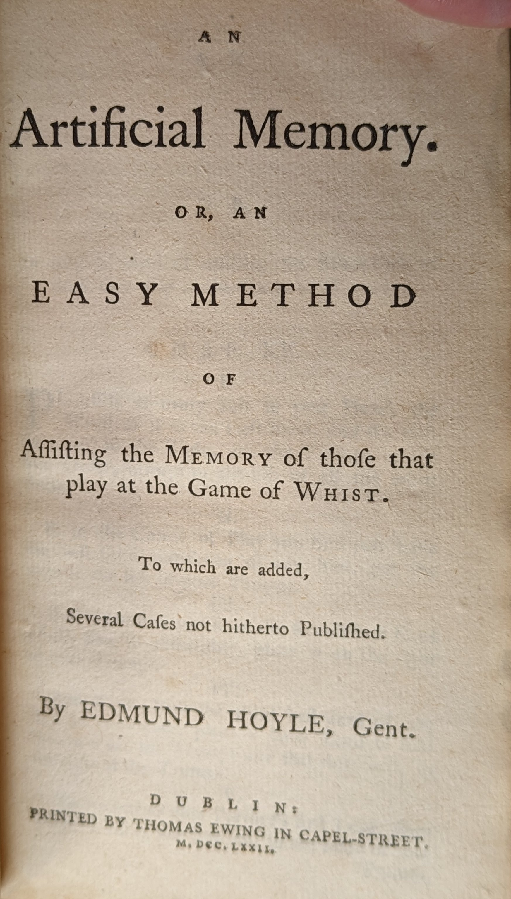
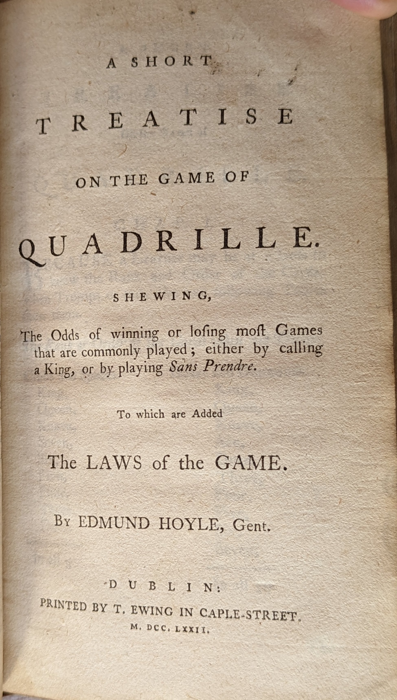
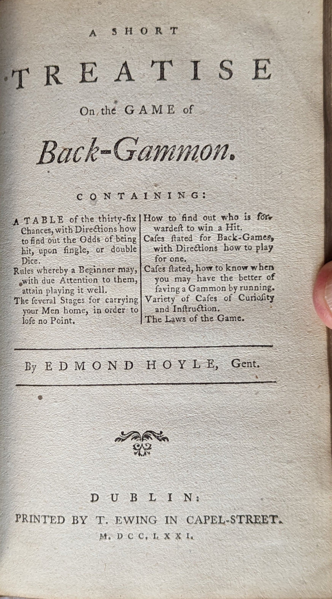
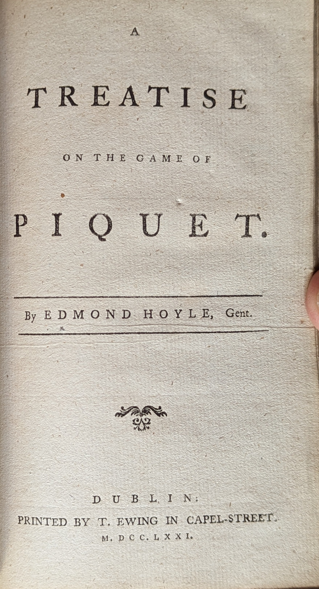
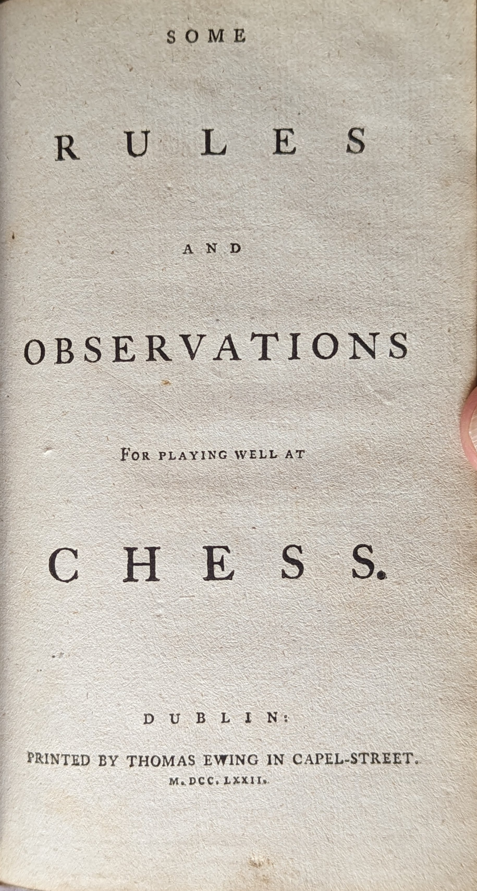
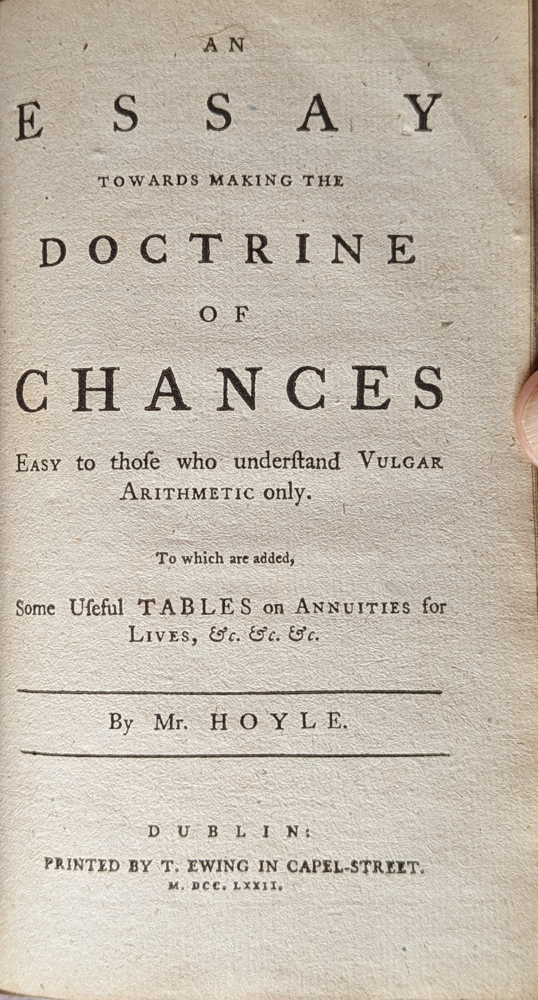

A Descriptive Bibliography of Edmond Hoyle
Copyright © 2014-26 by David Levy
(page updated 2025-04-29)User Guide
Polite.1.1
The Polite Gamester, printed by T. Ewing, first Dublin edition, first issue, 1772.
 |
Title: | THE | Polite Gameſter: | CONTAINING, | SHORT TREATISES | On the Games of | [3 lines to left of double rule] WHIST, with an | ARTIFICIAL ME-|MORY, | [3 lines to right of double rule] QUADRILLE, | BACK-GAMMON, | PIQUET and CHESS. | TOGETHER WITH AN | ESSAY | TOWARDS MAKING THE | Doctrine of Chances | Easy to thoſe who underſtand Vulgar | Arithmetic only. | To which are added, | Some Uſeful TABLES on Annuities for | Lives, &c. &c. &c. | By EDMUND HOYLE, Gent. | DUBLIN: | PRINTED BY T. EWING IN CAPEL-STREET. | M. DCC. LXXII. |
| Collation: | 12o: π1 A4 B–I12 K12(K12+1) [$1–5 (−A3,4,C3,4,5,D3,4,5,E5,G3,H5) signed]; 114 leaves, pp. [10 ] [1] 2–58 [59–61] 62–68 [69–71] 72–88 [89–91] 92–123 [124–127] 128–151 [152–155] 156–166 [167–171] 172–217 [218] |
| Section Title Artifical Memory |  |
AN | Artificial Memory. | OR, AN | EASY METHOD | OF | Aſſiſting the Memory of thoſe that | play at the Game of Whist. | To which are added, | Several Caſes not hitherto Publiſhed. | By EDMUND HOYLE, Gent. | DUBLIN: | PRINTED BY THOMAS EWING IN CAPEL-STREET. | M. DCC. LXXII. |
| Section Title Quadrille |  |
A SHORT | TREATISE | ON THE GAME OF | QUADRILLE. | SHEWING, | The Odds of winning or loſing moſt Games | that are commonly played; either by calling | a King, or by playing Sans Prendre. | To which are Added | The LAWS of the GAME. | By EDMUND HOYLE, Gent. | DUBLIN: | PRINTED BY T. EWING IN CAPLE-STREET. | M. DCC. LXXII. |
| Section Title Backgammon |  |
A SHORT | TREATISE | On the GAME of | Back-Gammon. | CONTAINING: | [11 lines to left of rule] A TABLE of the thirty-ſix | Chances, with Directions how | to find out the Odds of being | hit, upon ſingle, or double | Dice. | Rules whereby a Beginner may, | with due Attention to them, | attain playing it well. | The ſeveral Stages for carrying | your Men home, in order to | loſe no Point. | [11 lines to right of rule] How to find out who is for-|wardeſt to win a Hit. | Caſes ſtated for Back-Games, | with Directions how to play | for one. | Caſes ſtated, how to know when | you may have the better of | ſaving a Gammon by running. | Variety of Caſes of Curioſity | and Inſtruction. | The Laws of the Game. | [rule] | By EDMOND HOYLE, Gent. | [rule] | [tailpiece] | DUBLIN: | PRINTED BY T. EWING IN CAPEL-STREET. | M. DCC. LXXI. |
| Section Title Piquet |  |
A | TREATISE | ON THE GAME OF | PIQUET. | [rule] | By EDMOND HOYLE, Gent. | [rule] | [tailpiece] | DUBLIN: | PRINTED BY T. EWING IN CAPEL-STREET. | M. DCC. LXXI. |
| Section Title Chess |  |
SOME | RULES | AND | OBSERVATIONS | For playing well at | CHESS. | DUBLIN: | PRINTED BY THOMAS EWING IN CAPEL-STREET. | M. DCC. LXXII. |
| Section Title Doctrine of Chances |  |
AN | ESSAY | TOWARDS MAKING THE | DOCTRINE | OF | CHANCES | Easy to thoſe who underſtand Vulgar | Arithmetic only. | To which are added, | Some Uſeful TABLES on Annuities for | Lives, &c. &c. &c. | [rule] | By Mr. HOYLE. | [rule] | DUBLIN: | PRINTED BY T. EWING IN CAPEL-STREET. | M. DCC. LXXII. |
| Contents: | Signature (Page) Reference | Contents | Signature (Page) Reference | Running Titles |
| π1r | title | |||
| π1v | blank | |||
| A1r–A4r | ‘[double rule] | CONTENTS. | [...]’ | A2v–A4r | ‘CONTENTS.’ | |
| A4v | blank | |||
| B1r–D5v (1–58) | ‘A SHORT | TREATISE | ON THE GAME OF | WHIST. | [...]’ | B1v–D5r (2–57) | ‘A ſhort Treatise on | the Game of Whist.’ | |
| D5v (58) | ‘A ſhort Treatise &c.’ | |||
| D6r (59) | section title Artificial Memory | |||
| D6v (60) | blank | |||
| D7r–D10v (61–68) | ‘AN | Artificial Memory. | OR, | An eaſy Method of aſſiſting the Memory of | thoſe that play at the Game of Whist. | [...]’ | D7v–D10r (62–67) | ‘An Artificial | MEMORY.’ | |
| D10v (68) | ‘An Artificial, &c.’ | |||
| D11r (69) | section title quadrille | |||
| D11v (70) | blank | |||
| D12r–E8v (71–88) | ‘A SHORT | TREATISE | On the Game of | QUADRILLE. | [...]’ | D12v–E8r (72–87) | ‘A ſhort Treatise on the | Game of Quadrille.’ | |
| on D12v (72) | ‘A ſhort Treatise on’ | |||
| E8v (88) | ‘A ſhort Treatise, &c.’ | |||
| E9r (89) | section title backgammon | |||
| E9v (90) | blank | |||
| E10r–G2r (91–123) | ‘A SHORT | TREATISE | On the GAME of | Back-Gammon. | [...]’ | E10v–G2r (92–123) | ‘A ſhort Treatise on the | Game of Back-Gammon.’ | |
| on F8r (111), F11r (117) | ‘the Game of Back-Gammon.’ | |||
| on F12v (120) | ‘A ſhort Treatise on’ | |||
| G2v (124) | blank | |||
| G3r (125) | section title piquet | |||
| G3v (126) | blank | |||
| G4r–H4r (127–151) | ‘A | TREATISE | ON THE GAME OF | PIQUET. | [...]’ | G4v–H4r (128–151) | ‘A Treatiſe on Piquet.’ | |
| H4v (152) | blank | |||
| H5r (153) | section title chess | |||
| H5v (154) | blank | |||
| H6r–H11v (155–166) | ‘SOME| RULES | AND | OBSERVATIONS | For playing well at Chess. | [...]’ | H6v–H11r (156–165) | ‘Rules and Obſervations | for playing at CHESS.’ | |
| H11v (166) | ‘Rules and Obſervations &c.’ | |||
| H12r (167) | section title doctrine of chances | |||
| H12v (168) | blank | |||
| I1r (169) | ‘TO THE | RIGHT HONOURABLE | THE | EARL OF EGMONT. | [...]’ | |||
| I1v (170) | ‘THE | PREFACE. | [...]’ | |||
| I2r–K12+1r (171–217) | ‘AN | ESSAY | ON THE | DOCTRINE of CHANCES, &c. | [...]’ | I2v–K12+1r (172–217) | ‘An Essay on the | Doctrine of Chances.’ | |
| K12+1v (218) | blank |
| Catchwords: | D1v(50) 6. If [16. If]; D2v(52) Query. [Query,]; F4r(103) CHAP. [CHAP] |
| Publisher: | Thomas Ewing |
| Printer: | Thomas Ewing |
| Price: | 2s.8½d. Thomas Ewing 1774 (catalogue) |
| References: | ESTC T129141, Horr 667, Jessel 813, Rather 53 |
| Copies Seen: | BFl [I.795/HOYL (b1124804)]; D [Dublin1772(30)]; Dt [OLS B-4-859]; L [1507/1167] (ECCO); O [Jessel f.575]; OCl [789 87H F72D]; TNJ [GV1241.H8P 1772]; Levy [1164] |
| Other Copies: | C [Hib.7.772.82]; Gu [Sp Coll BG57-m.14]; HAG [KW 350 F 16] (catalogue says "printed by Peter Hoey"?); ICN [V 16 .42]; MdBJ-G [GV1241.H6 1772]; Vi [GV1241.H86 1772] |